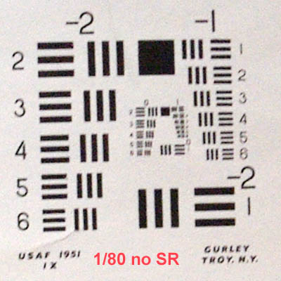
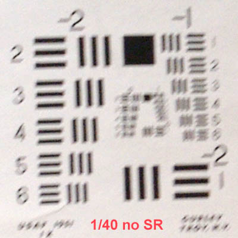
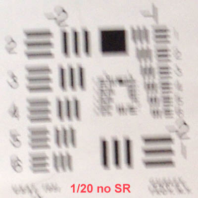
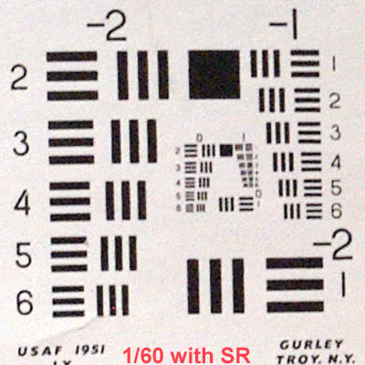
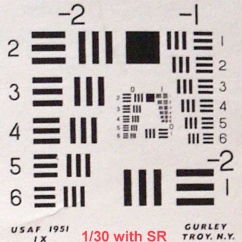
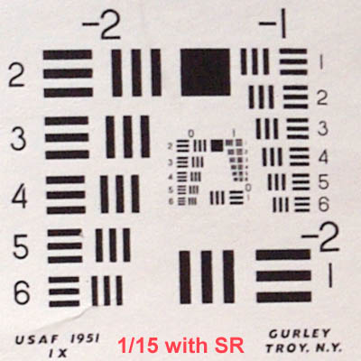

|
The Pentax K20D: a RAW reviewPage 6, version 2.0, © 2008 by Dale Cotton, all rights reserved Intro Handling Res Colour DR & noise High ISOs JPEGs Human subj. SR K10D comp. Eval Shake reduction (AKA image stabilization)IS testing probably requires some sort of calibrated vibration machine for consistent results. But just to get an idea of what to expect, I propped a res chart up on a desk top, stood several feet back then took successive frames at progressively slower shutters, once with SR off and once with SR on:   
  
Fig. 36: IS testing Clearly, SR is doing its job; but bear in mind I used the 16-45/4 at 45mm for this test (not having anything longer at present). No one expects to go as slow as 1/15th with significant tele glass, even with IS this good. The 1/60th with SR shot is every bit as sharp as a tripod shot with mirror lock-up. (BTW: although the manual says to turn SR off when shooting from a tripod, I haven't yet seen a difference .) K10D vs K20D res comparisonWe already have a shadow noise comparison between the K10D and the K20D, showing that the K10D comes out somewhat ahead. About a year ago I took my tripod to my local camera store and shot some test pix with the K10D and the 16-45. After purchasing the K20D I went back to the same spot with it, the 16-45, and a tripod to try to re-create the same sequence. My purpose here is to provide a bit of objective evidence for those of you who own the K10D and feel tempted to upgrade, as to how much more resolution the K20D has to offer. We know from the dpreview testing that the K10D was at the top of the 10 mp class in resolution and so should stand in for any of last year's 10 mp dSLRs for those tempted to upgrade. Here are crops from the same scene taken with the K10D and the K20D:
Fig. 37: K10D, 28mm @f/8 crop. (Full size, level 12, 6.0 mp JPEG. DNG to come.)
Fig. 38: K20D, 28mm @f/8 crop. (Full size, level 12, 5.4 mp JPEG. DNG to come.) Click on the links to the full-size JPEGs for un-edited JPEGs exported from Lightroom with no sharpening or other adjustments, to evaluate them for yourself. Ignore the contrast and colour between the two crops, since lighting conditions were not the same. For the above crops, I up-sampled the K10D file to the same size as the K20D file to make it easier to do visual comparison. I also sharpened both as best I could, although, as you can see, the K10D crop just doesn't want to come clean. I don't think there's much question that the K20D's increase in fine detail is palpable. Where there is a question is which K10D owners will benefit from that increase. The above shots were taken on a tripod with mirror lock-up at f/8 (the sweet spot of most lenses), they contain subject matter such as distant bare branches and overhead wires that can benefit from the extra resolution. Given that all these conditions are met, then, yes: the K20D will allow you to make a bigger print than the K10D, or a more-finely detailed medium-size print. To me, this would seem to be of more concern to those who do landscape and group portraits then to those who do family events and sports, for example. |
| - 6 - |


{kind=link}
{kind=link}